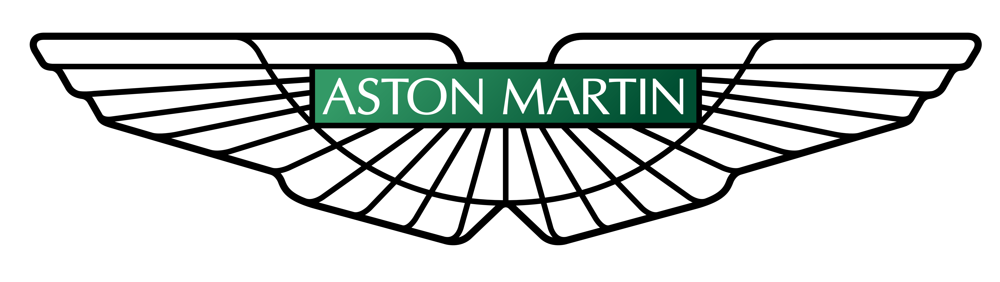
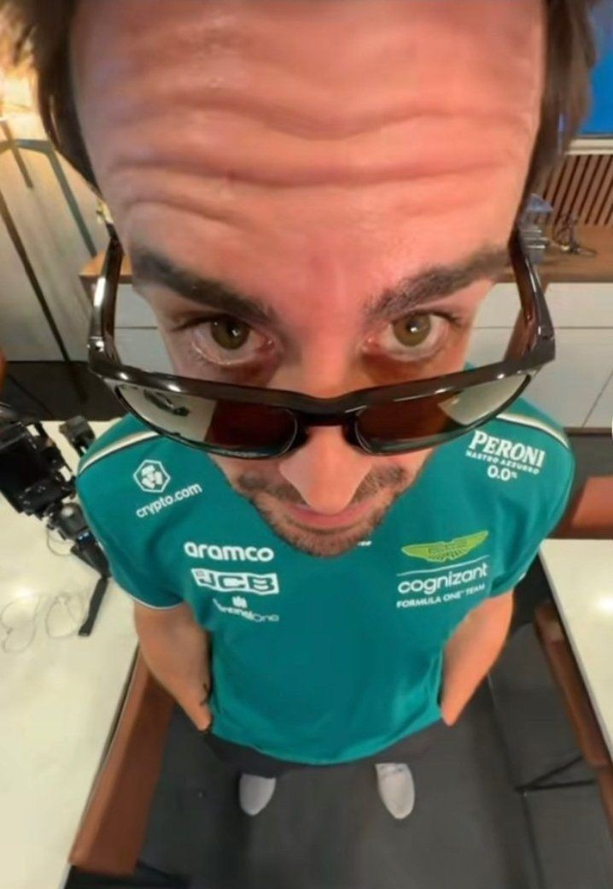
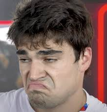

Aston Martin
Aston Martin Aramco
Team Principle: Andy Cowell
Drivers: Fernando Alonso, Lance Stroll
Car: AMR25
Reserve Drivers: Felipe Drugovich, Stoffel Vandoorne
Academy Drivers: Tina Hausmann, Jak Crawford
Fernando Alonso
Fernando Alonso is the oldest driver on the grid but he is still a good driver. He won 2 world championships in 2005 and 2006 for Renault and recently joined Aston Martin to help build the team as it is still fairly new.
Race Engineer: Andrew Vizard
Lance Stroll
Lance Stroll has been in the sport for a while but not because of his talent instead its because his dad Lawrence Stroll has owned or been a big investor for the teams he has driven for. He is currently at Aston Martin meaning there is basically only one seat up for grabs because his is alredy confirmed.
Race Engineer: Gary Gannon